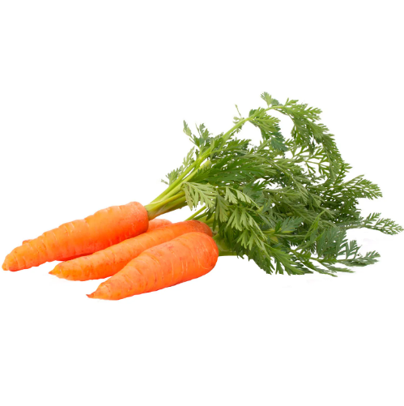

Beneficios de consumir frutas frescas
Conoce algunos de los beneficios de incorporar frutas frescas a tu alimentación diaria.
Leer más
Conoce algunos de los beneficios de incorporar frutas frescas a tu alimentación diaria.
Leer más
Descubre por qué las verduras son importantes dentro de una alimentación equilibrada.
Leer más